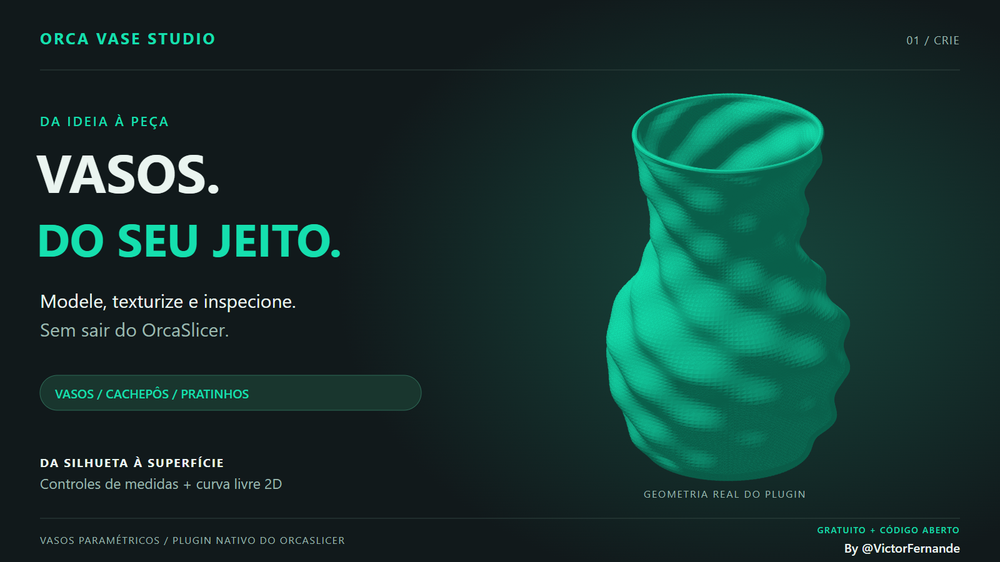
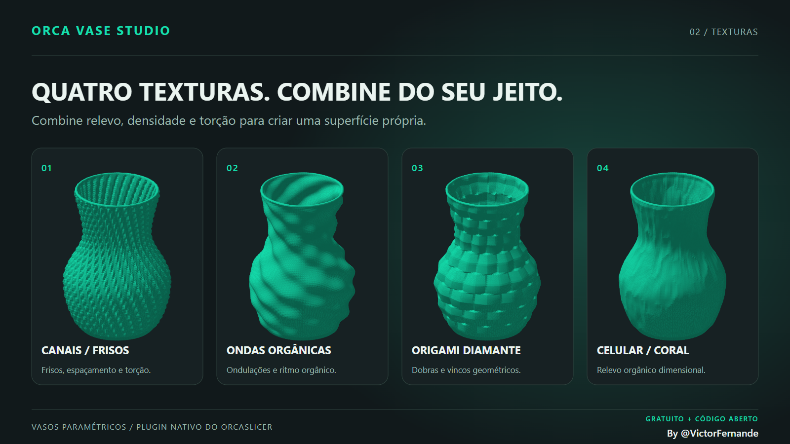
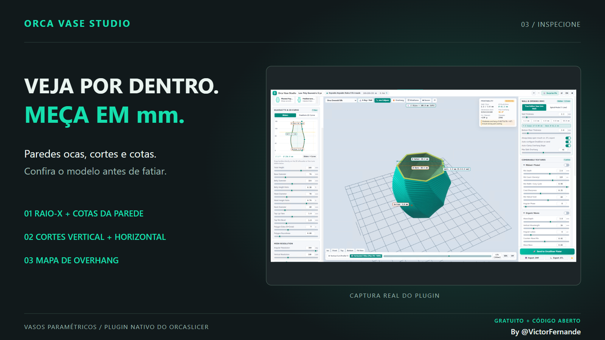
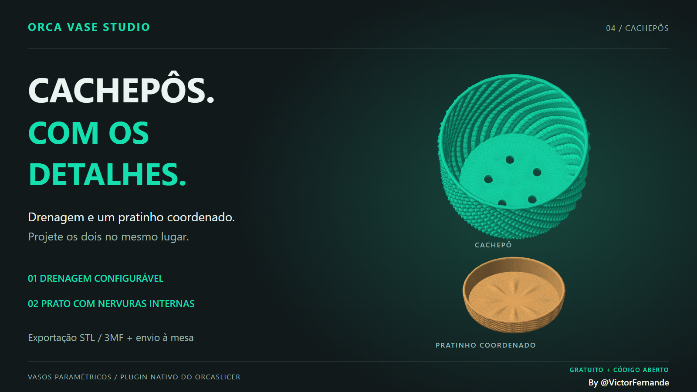
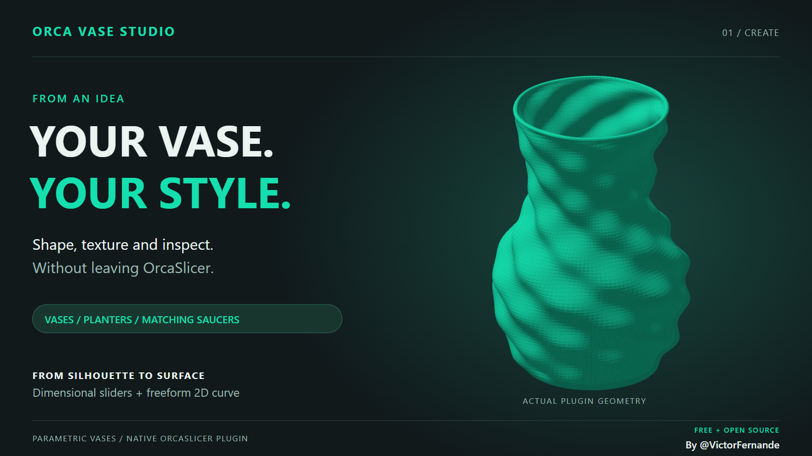
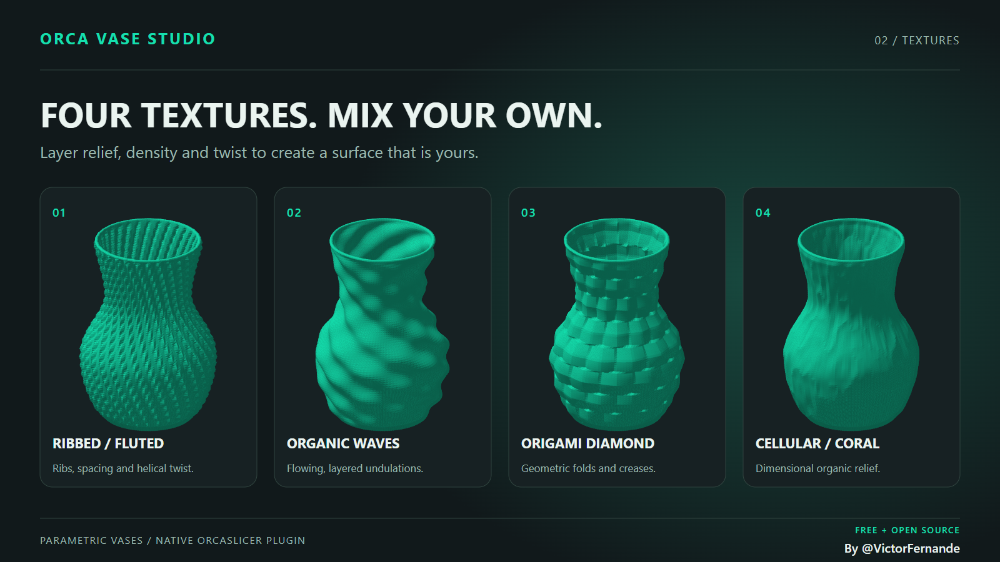
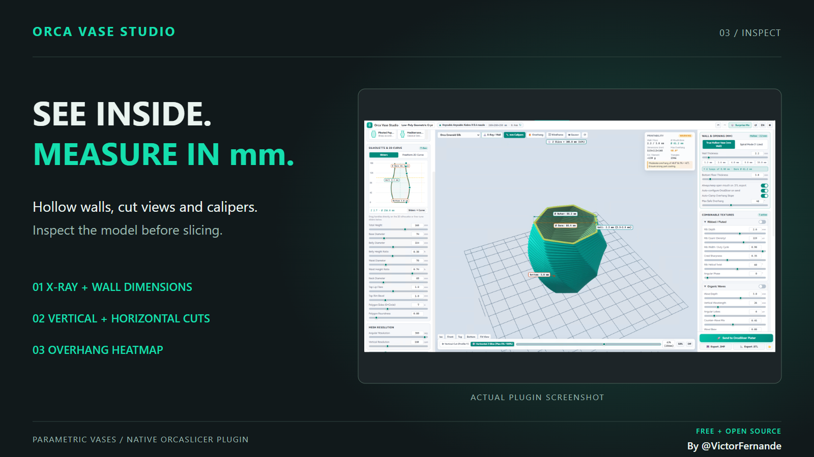
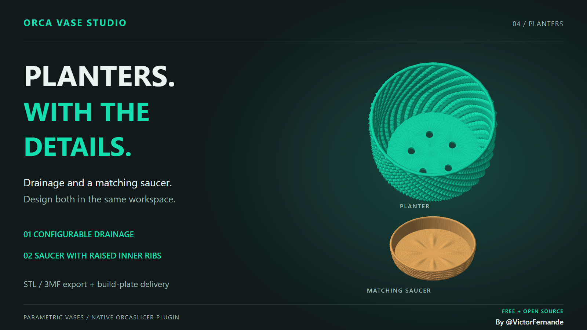

Vasos do seu jeito. Sem sair do OrcaSlicer.
Crie vasos e cachepôs offline com controles de medidas ou curva livre 2D. Comece com 12 presets, use Surpreenda-me ou salve seu próprio modelo.

Quatro texturas combináveis
Misture canais/frisos, ondas orgânicas, origami diamante e celular/coral. Ajuste relevo, densidade, torção e suavização nas extremidades para criar sua superfície.

Veja por dentro. Meça em milímetros.
Escolha parede oca ou Modo Espiral. Confira abertura, parede e fundo com Raio-X, cotas em milímetros, cortes vertical/horizontal e mapa de overhang.

Cachepôs com os detalhes
Configure a drenagem e um pratinho coordenado com nervuras internas. Exporte STL / 3MF ou envie os objetos à mesa, com sugestões opcionais de fatiamento.

Como começar
- Instale e ative no OrcaSlicer 2.5.1+ e reinicie o aplicativo.
- Abra a aba ou o painel do Vase Studio, escolha um preset e ajuste.
- Inspecione o modelo, exporte ou envie à mesa e revise o fatiamento.
Interface em português e inglês. Os diagnósticos auxiliam a inspeção; a impressão depende do material, da orientação e das configurações da impressora.
Your vase. Your style. Without leaving OrcaSlicer.
Create vases and planters offline with dimensional sliders or a freeform 2D profile. Start with 12 presets, try Surprise Me or save your own design.

Four textures to combine
Mix ribbed/fluted, organic waves, origami diamond and cellular/coral. Adjust relief, density, twist and fade zones to build your own surface.

See inside. Measure in millimeters.
Choose hollow walls or Spiral Vase mode. Inspect the opening, wall and floor with X-Ray, millimeter calipers, vertical/horizontal cuts and the overhang heatmap.

Planters with the details
Configure drainage holes and a matching saucer with raised inner ribs. Export STL / 3MF or send the objects to the build plate, with optional slicing suggestions.

Get started
- Install and activate in OrcaSlicer 2.5.1+, then restart it.
- Open the Vase Studio tab or dock, choose a preset and adjust it.
- Inspect the model, export or send to the plate, and review slicing settings.
Interface in English and Portuguese. Preview diagnostics assist inspection; printing results depend on material, orientation and printer settings.